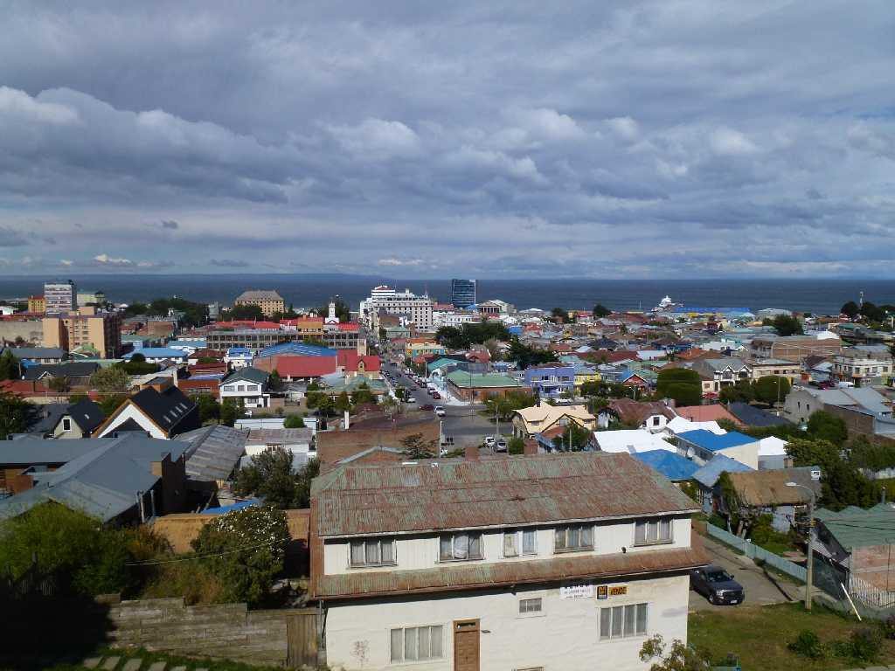
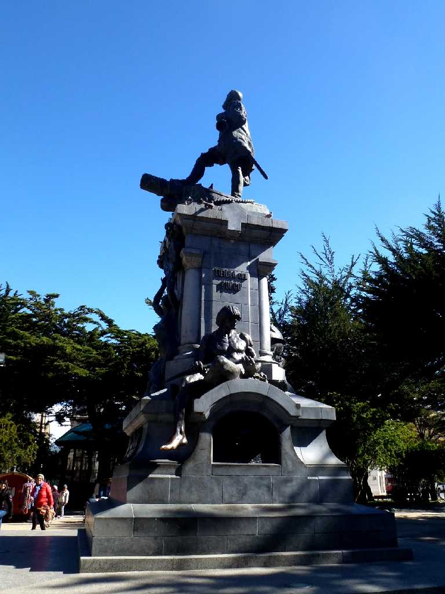
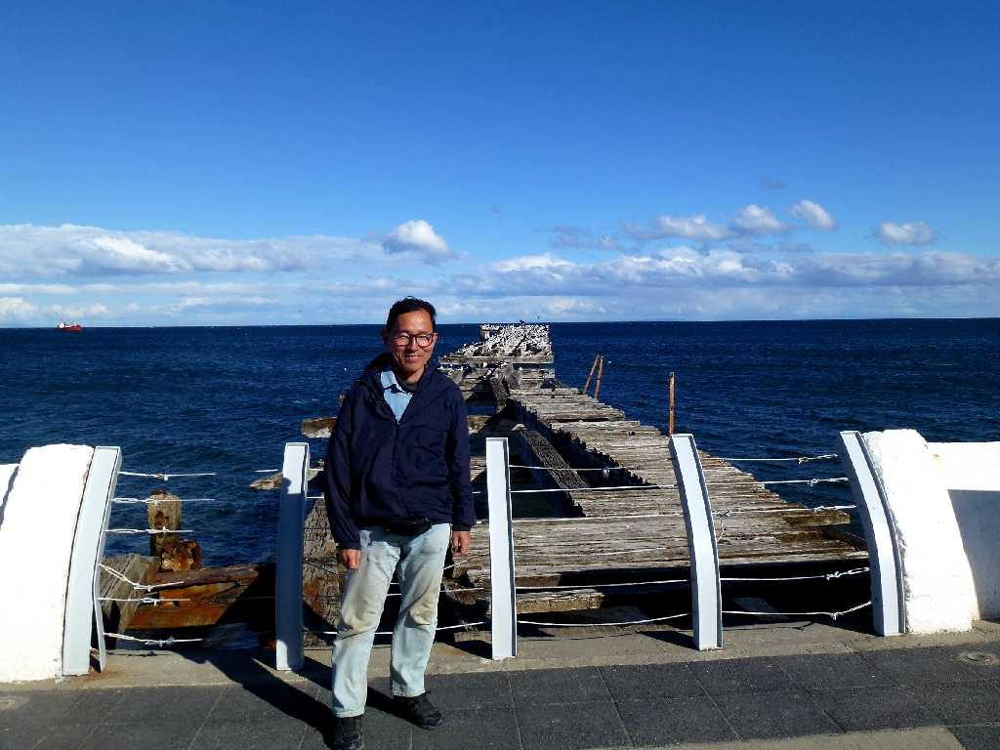

Estrecho de Magallanes Punta Arenas
世界最南端の都市(人口１０万人以上)プンタアレーナスは砂の岬を意味しマゼラン海峡の中継地として栄え１９世紀には羊毛の積出港として２０世紀には石油の発掘により更に繁栄したがパナマ運河が開通したのち中継基地の役割は薄れた

Monumento a Hernando de Magallanes Punta Arenas
マゼラン像の下にいる先住民をマゼランは足の大きな人と呼んだことから先住民の足に触れると幸せになれるそうで皆さわり輝いていて足の大きな人を意味するパタゴからこの地域をパタゴニアと呼んでいる

February 18 2014 Punta Arenas